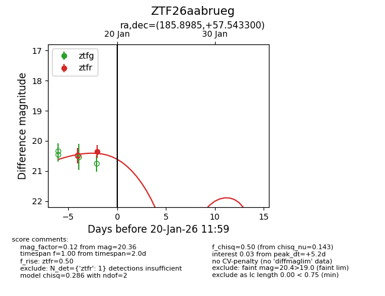
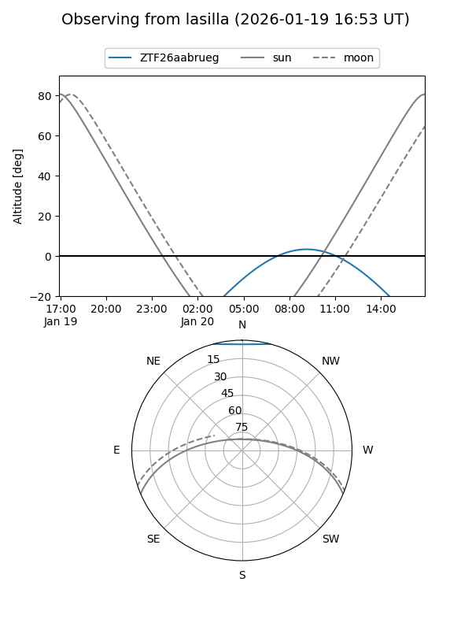
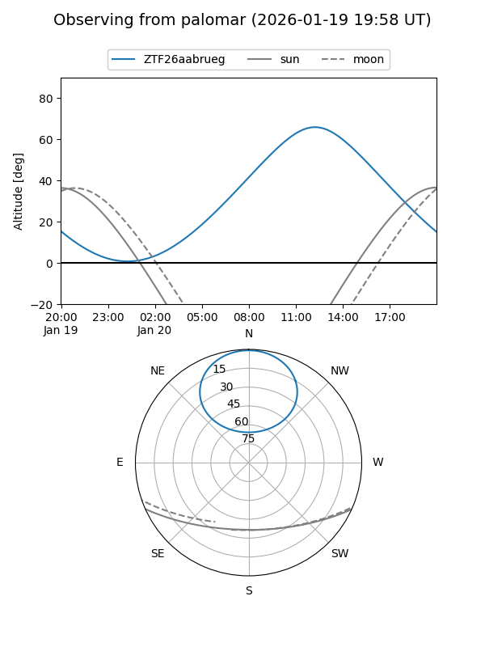
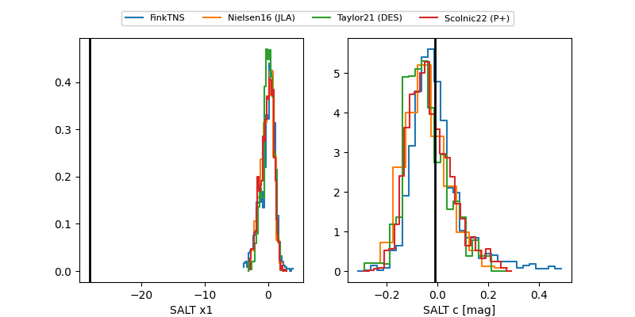

ZTF26aabrueg
Target ZTF26aabrueg at 2026-01-18 12:00
Aliases and brokers:
FINK: link
Lasair: link
ALeRCE: link
alt names
ZTF26aabrueg (ztf,fink_ztf)
Coordinates:
equatorial (ra, dec) = 185.8985,+57.54330
equatorial (HMS+DMS) = 12:23:35.65,+57:32:35.88
galactic (l, b) = (130.2269,+59.18884)
Flags:
Photometry:
last ztfr=20.36
1 ztfr detections
Lightcurve

Visibility


Additional plots
